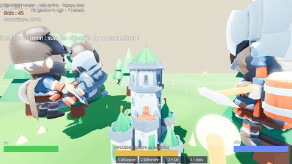
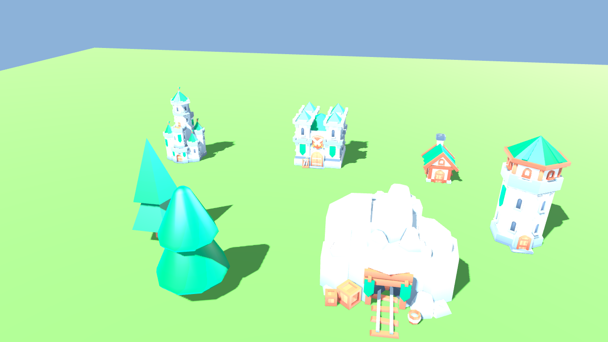
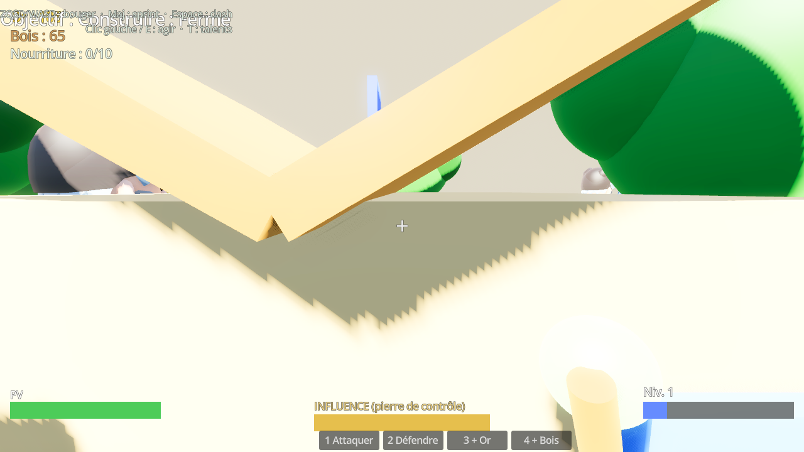
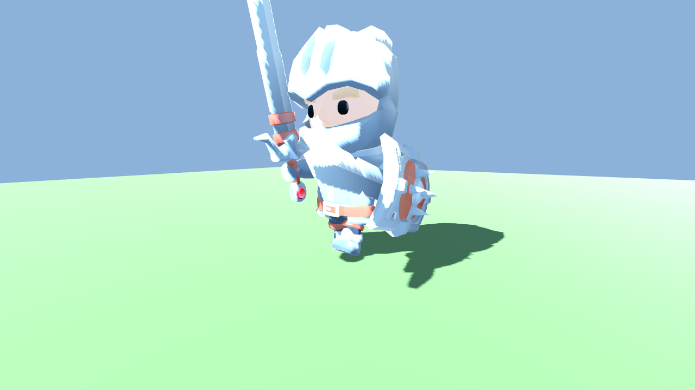
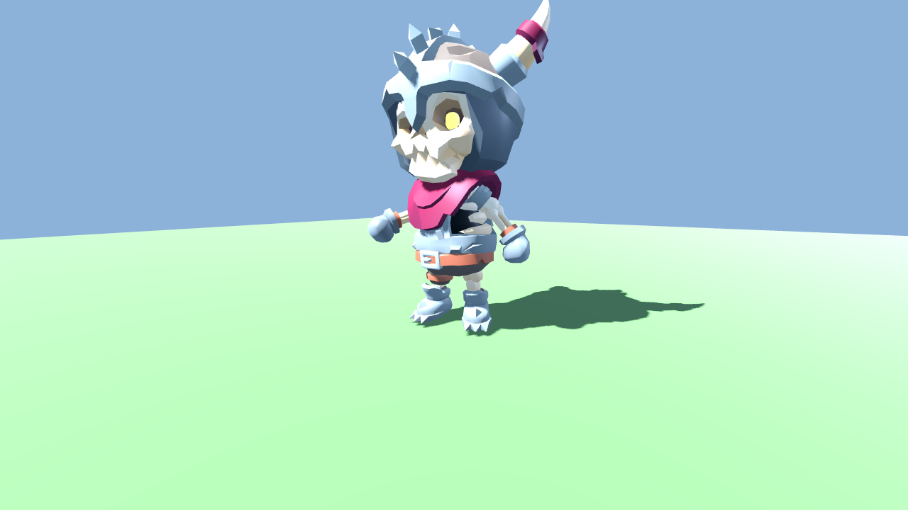
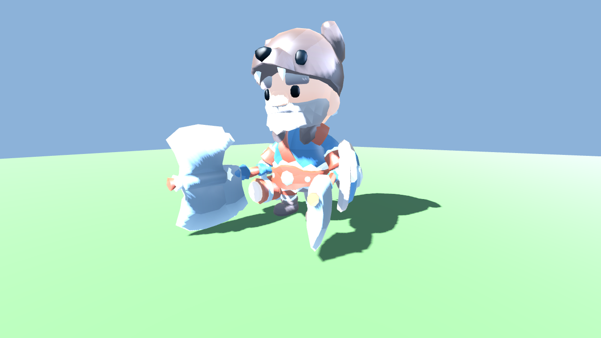
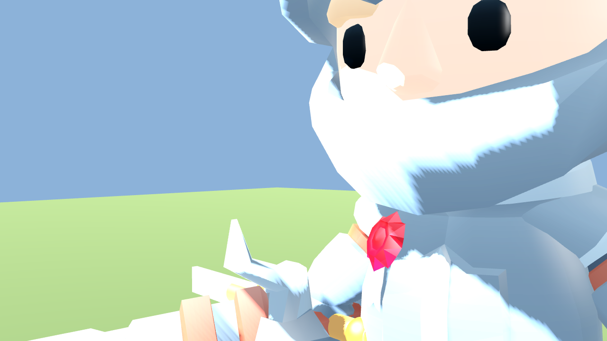
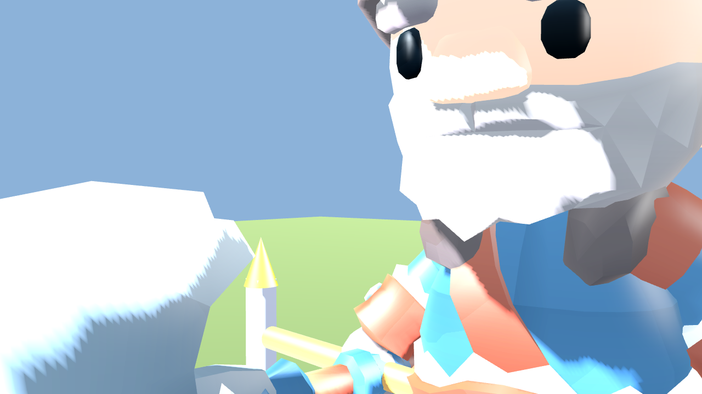

Captures hors-écran réelles (modèles KayKit + cel-shading + SSAO/bloom/ACES). Ouvrez cette page et jugez par vous-même.

🔄 En mouvement : le péon se déplace, abat un arbre (entaille visible par coup + tremblement), ramène le bois, construit. C'est le game feel, pas une image figée.







Tests objectifs reproductibles : test_props.gd (22/22), test_game_feel.gd (8/8), test_weapon_grip.gd (15/15), test_skeletal.gd. Détail dans docs/COMPARISON.md.